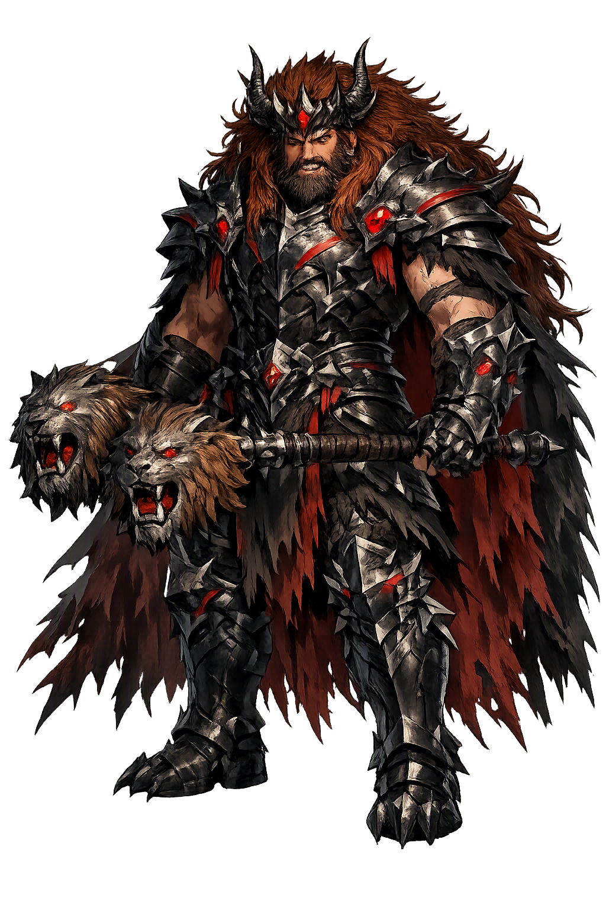

Stories of Nergal
Nergal's myths are myths of descent and dominion. He begins as a god of the upper world — a son of Enlil, lord of the air — and ends as king of the underworld through violence that turns into sovereignty. His stories survive in Sumerian hymns, in the Akkadian Epic of Erra, and in the two major versions of Nergal and Ereshkigal.
In the Standard Babylonian version of Nergal and Ereshkigal, the queen of the underworld sends her minister Namtar to the gods' assembly to complain that Nergal has refused to rise before her messenger. The gods order Nergal to descend and make amends, but Ea warns him: accept no throne, no bread, no bath, no bed in the netherworld, for each gift is a snare. At each of the seven gates he strips away a divine emblem — his crown, his scepter, his weapons — until he stands naked before the queen. Then he seizes Ereshkigal by the hair and raises his sword to kill her. She bargains: give me your hand, she says, and take the underworld's throne and my bed as husband. He accepts, and the two rule the dead together. The older Amarna version tells a mirror image of the same story: Nergal is banished to the underworld for slaying its emissaries, seduces the queen through seven gates of gifts, and then claims her throne by force. The two versions agree on the theology: the underworld's crown passes through marriage to whoever is bold or desperate enough to take it.
The Akkadian Epic of Erra — also called Erra and Ishum — opens with the warrior Erra, identified with Nergal, restless on his throne. He persuades Marduk to leave his cult statue unadorned for refurbishment, so that Babylon's protective presence is withdrawn; then he and his seven personified weapons burn city after city across Mesopotamia, until the very gods of the land must flee to heaven. The destruction is not mindless: Erra claims the world has grown corrupt and sluggish and must be purged. But the poem is equally clear that his fire has overshot. The god Ishum — 'the wise one' — walks behind the devastation healing what he can, and finally confronts Erra with the political arithmetic of ruin: a king whose land is ash has no subjects left to rule. Ashamed, Erra relents and orders the world rebuilt. The poem is Mesopotamia's great meditation on the difference between necessary punishment and appetite — and on the subordinate whose counsel is civilization's last defense against its own god of war.
The Sumerian myth Enlil and Ninlil explains Nergal's origin through the exile of the young god. Enlil seduces (or, in the telling's own harsh terms, takes) the goddess Ninlil by the canal-bank of Nippur; the assembly of the gods condemns him to the underworld in disgrace. As he descends, Ninlil follows him down, and to keep her from remaining below, Enlil meets her three times in disguise — as the gatekeeper, the man of the river, and the ferryman of the dead — begetting at each meeting an underworld god. The first child, conceived at the gate itself, is Meslamtaea, 'the one who comes forth from the Meslam', the temple that will be Nergal's own — and this is Nergal's oldest name. The second and third children, Ninazu and Enbilulu, inherit the river and the ferry. The story gives the terrible underworld king a legitimate and even poignant pedigree: he is the son of the king of the gods, born of an act of sacrifice, stationed at the threshold so that his mother need not stay below. Nergal's violence is dynastic — the prince exiled to the gate becomes its eternal keeper.
Nergal's principal cult centre was Kutha (Sumerian Ki-ut), modern Tell Ibrahim north of Babylon, where his temple Emeslam — 'House of the Warrior of the Netherworld' — stood. Royal inscriptions from the Neo-Babylonian kings, above all Nebuchadnezzar II, record its lavish restoration; Neo-Assyrian kings made offerings to 'Nergal of Kutha' on campaign, and the god's lion strode across cylinder seals and bronze plaques as the armed protector of kings. In hymns he is the lion who strikes down enemies, the lord who burns the wicked, the god who opens the earth to receive the dead. His worship persisted into the Hellenistic period, when Greek writers identified him with Ares and Babylonian astronomy assigned him the planet Mars — the red wanderer fitting the burning underworld lord. Kutha anchored a theology of terror: the god who sends plague and war was honored not despite his destructiveness but because it was disciplined, royal, and — within limits — just.
War, Plague, and the Underworld
Nergal is the Mesopotamian god in whom three terrible jurisdictions meet: the battlefield, the epidemic, and the realm of the dead. His name means 'lord of the great city', and his great city is Kutha (Tell Ibrahim), from which his authority radiated across Sumer, Akkad, Assyria, and Babylonia. Where other war gods personify the glory of victory, Nergal personifies the unstoppable force that cuts life down.
The lion is Nergal's animal; he is the kingly predator whose roar announces war and whose jaws close on the dying.
Nergal sends pestilence as a warrior sends arrows; epidemics are his invisible campaign against the living.
By marriage to Ereshkigal, Nergal becomes king of the dead; his throne stands at the lowest gate of the cosmos.
In the poem of Erra, Nergal's burning fury almost consumes Babylon until the subordinate god Ishum stays his hand.
From the original script to the living URL
𒀭𒄊𒀕
The name in its original Mesopotamian form. Nergal (𒀭𒄊𒀕) is attested in the source tradition — “Lord of the great city”. Its original diacritics and script distinctions carry the full phonetic and orthographic weight of the source tradition.
nergal
The plain nergal form is identical to the Unicode restoration. Because this name is already written in Latin letters, no diacritics, stress, or script information were lost — only capitalization differs.
Nergal
The Unicode restoration does not need to recover lost marks for Nergal. Its value is canonical spelling and consistent cataloguing, not the reconstruction of erased orthography. The domain is readable as-is to both DNS and humanity.
Nergal.com
This restoration is written entirely in ASCII letters — no Punycode encoding stands between Nergal and the DNS. The domain reads identically to machines and to human eyes.
Owned, ideal, and ASCII forms of Nergal
Nergal
Restores 𒀭𒄊𒀕. The full Unicode restoration. nergal.com is not in the PuniCodex collection — it is watched for release; if it drops, this temple upgrades to an owned flagship.
How Nergal was spoken
How Nergal travels from ancient script to the modern URL
The etymology is uncertain; the logogram may represent a contraction or abbreviation of a longer divine title associated with Kutha, the underworld city.
To name Nergal is to name the moment when destruction becomes authority. He is not a chaotic demon but a god who descends through every gate, strips away his own divine equipment, and still emerges as sovereign. That descent is not a fall; it is a claim. The underworld, in his theology, is not an absence of order but a realm with its own king, its own queen, and its own laws.
Enter Extended Lore